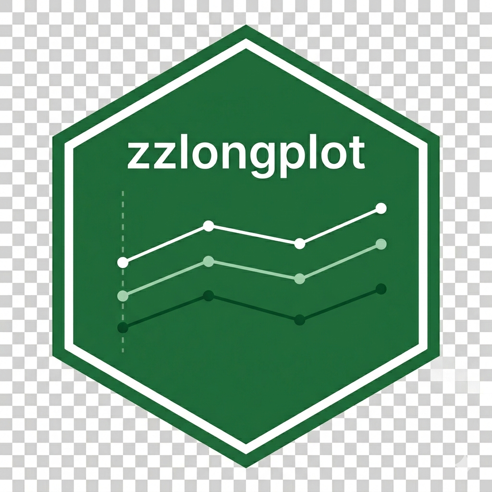
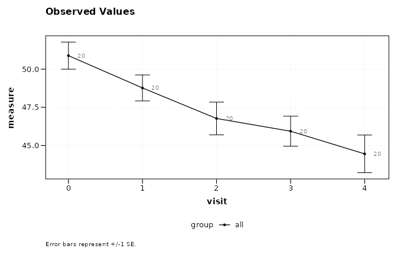
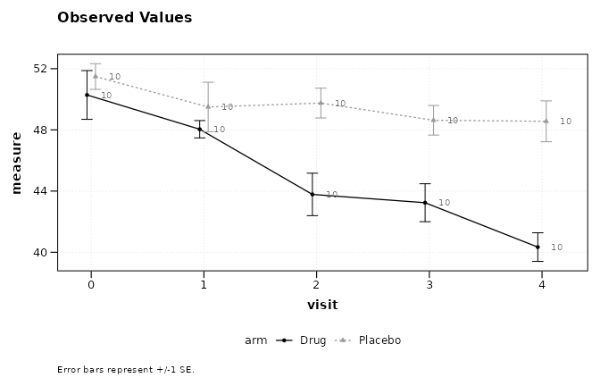
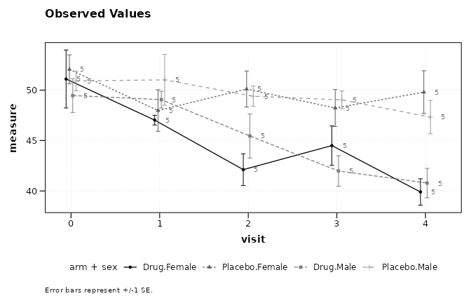
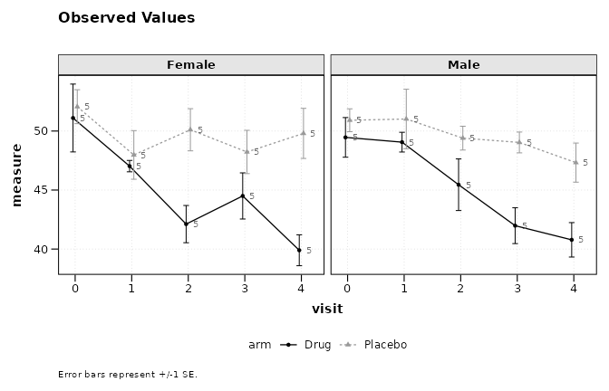
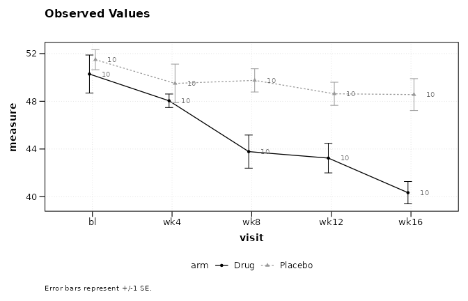
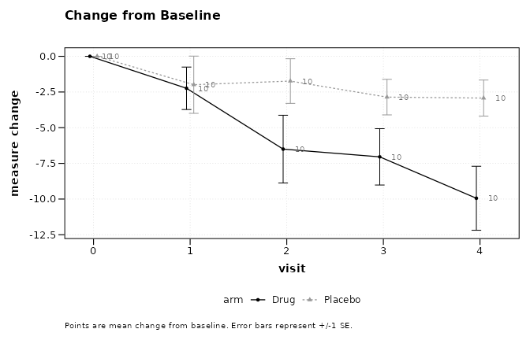
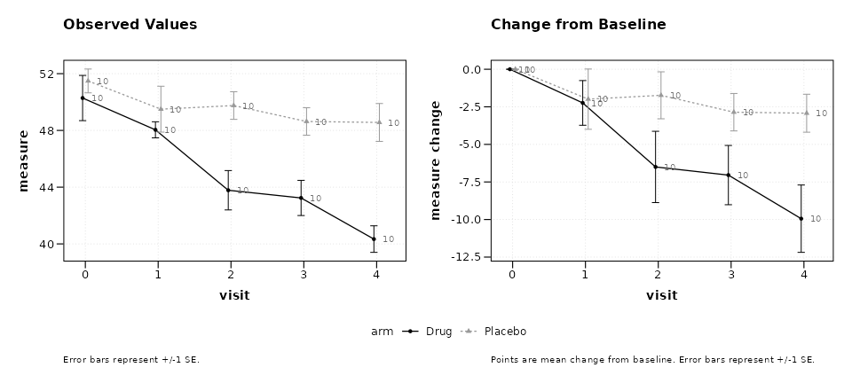

The Formula Interface
Ronald (Ryy) G. Thomas
2026-05-01
Source:vignettes/formula-interface.Rmd
formula-interface.RmdOverview
The lplot() function uses a formula interface to specify
the relationship between outcome, time, and grouping variables. This
design follows the convention established by base R modeling functions
such as lm() and aov(), making the syntax
familiar to most R users.
The general form is:
outcome ~ time | groupwhere each component maps to a plot element:
-
outcome (left of
~): the response variable, plotted on the y-axis -
time (right of
~, before|): the independent variable, plotted on the x-axis -
group (after
|): an optional grouping variable, mapped to color and linetype
The formula is parsed internally by parse_formula(),
which extracts each component as a character string for downstream use
in summary statistics and plot construction.
Example data
The examples below use a simulated longitudinal dataset with two treatment arms measured at five visits.
Simple formula: y ~ x
The minimal formula specifies only an outcome and a time variable. This produces a single line with error bars summarising all subjects together, with no group differentiation.
lplot(trial, score ~ visit, baseline_value = 0,
plot_type = "obs")
#> Warning: The `size` argument of `element_line()` is deprecated as of ggplot2 3.4.0.
#> ℹ Please use the `linewidth` argument instead.
#> ℹ The deprecated feature was likely used in the zzlongplot package.
#> Please report the issue at <https://github.com/rgt47/zzlongplot/issues>.
#> This warning is displayed once per session.
#> Call `lifecycle::last_lifecycle_warnings()` to see where this warning was
#> generated.
#> Warning: The `size` argument of `element_rect()` is deprecated as of ggplot2 3.4.0.
#> ℹ Please use the `linewidth` argument instead.
#> ℹ The deprecated feature was likely used in the zzlongplot package.
#> Please report the issue at <https://github.com/rgt47/zzlongplot/issues>.
#> This warning is displayed once per session.
#> Call `lifecycle::last_lifecycle_warnings()` to see where this warning was
#> generated.
Adding a group: y ~ x | group
The pipe operator | introduces a grouping variable. Each
level of the group receives its own line and color.
lplot(trial, score ~ visit | arm, baseline_value = 0,
plot_type = "obs")
Multiple grouping variables: y ~ x | g1 + g2
When the data contain more than one factor of interest, combine them
with +. The groups are concatenated into a single
interaction factor for plotting.
trial$sex <- rep(c("Male", "Female"), length.out = nrow(trial))
lplot(trial, score ~ visit | arm + sex, baseline_value = 0,
plot_type = "obs")
Adding facets: y ~ x | group with
facet_form
Faceting is specified through a separate facet_form
argument rather than through the main formula. This keeps the primary
formula concise while still supporting panel layouts.
lplot(trial, score ~ visit | arm, baseline_value = 0,
facet_form = ~ sex,
plot_type = "obs")
For two-dimensional faceting, use a two-sided formula:
lplot(trial, score ~ visit | arm, baseline_value = 0,
facet_form = sex ~ site,
plot_type = "obs")Baseline auto-detection
When baseline_value is omitted (or set to
NULL), lplot() attempts to identify the
baseline visit automatically. For numeric visit variables, the minimum
value is used. For character or factor visit codes, the function
searches for common labels including 'bl',
'BL', 'baseline', 'screening',
'scr', 'day 0', 'week 0',
'pre', and 'visit 1'.
A message is printed to the console reporting which value was selected.
lplot(trial, score ~ visit | arm, plot_type = "obs")
#> baseline_value not specified; using 0 (minimum numeric value).
If the visit variable uses a recognised character code, the detection works the same way:
trial_char <- trial
trial_char$visit <- factor(
trial_char$visit,
levels = 0:4,
labels = c("bl", "wk4", "wk8", "wk12", "wk16")
)
lplot(trial_char, score ~ visit | arm, plot_type = "obs")
#> baseline_value not specified; using 'bl'.
If no common baseline label is found, or if multiple candidates match
(e.g., a dataset containing both 'bl' and
'baseline'), the function raises an informative error
asking the user to set baseline_value explicitly.
Change from baseline
The plot_type argument controls whether observed values,
change scores, or both are displayed. The formula itself does not
change; the same specification drives all three plot types.
lplot(trial, score ~ visit | arm, baseline_value = 0,
plot_type = "change")
lplot(trial, score ~ visit | arm, baseline_value = 0,
plot_type = "both")
Formula parsing details
The parse_formula() function is exported and can be
called directly to inspect how a formula is decomposed:
parse_formula(score ~ visit | arm)
#> $y
#> [1] "score"
#>
#> $x
#> [1] "visit"
#>
#> $group
#> [1] "arm"
#>
#> $facets
#> NULLFor formulas with faceting specified in the main formula (an
alternative syntax), a second ~ introduces facet
variables:
parse_formula(score ~ visit | arm ~ site)
#> $y
#> [1] "score"
#>
#> $x
#> [1] "visit"
#>
#> $group
#> [1] "arm"
#>
#> $facets
#> [1] "site"
parse_formula(score ~ visit | arm ~ site + region)
#> $y
#> [1] "score"
#>
#> $x
#> [1] "visit"
#>
#> $group
#> [1] "arm"
#>
#> $facets
#> [1] "site" "region"Summary
The table below lists the supported formula patterns and their corresponding plot mappings.
| Formula | y-axis | x-axis | Color/group | Facet |
|---|---|---|---|---|
y ~ x |
y | x | none | none |
y ~ x \| g |
y | x | g | none |
y ~ x \| g1 + g2 |
y | x | g1:g2 | none |
y ~ x \| g ~ f |
y | x | g | f |
y ~ x \| g ~ f1 + f2 |
y | x | g | f1, f2 |
The facet_form argument provides an equivalent and often
clearer way to specify facets separately from the main formula:
| Main formula | facet_form | Result |
|---|---|---|
y ~ x \| g |
~ f |
columns by f |
y ~ x \| g |
f1 ~ f2 |
grid: rows by f1, columns by f2 |